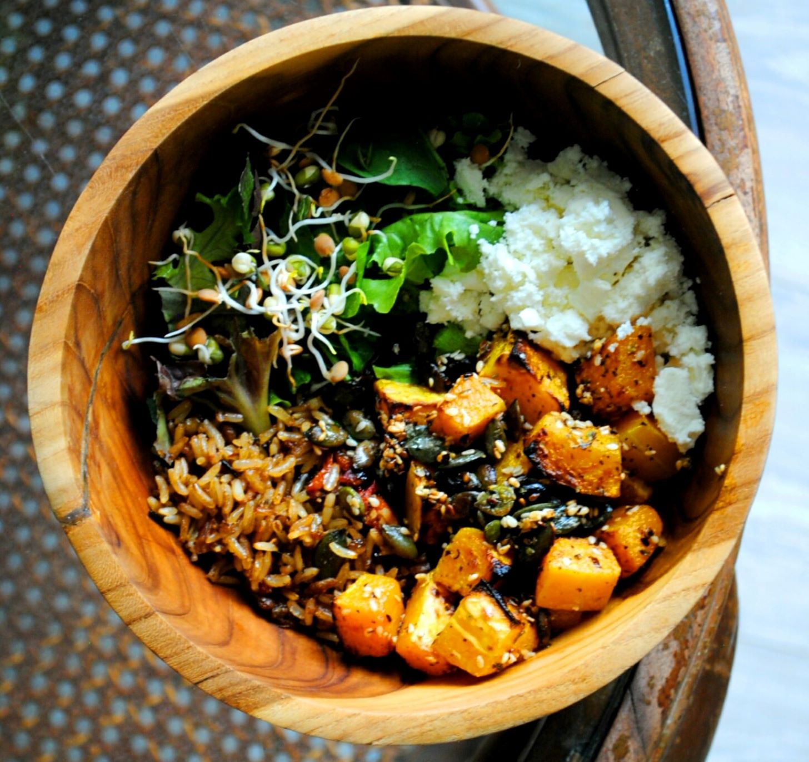

Introduction
About 8% of all people on earth are Buddhist. They seek to reach enlightenmnet through meditation and mindfullness.
Many Buddhist monks have a Vegetarian diet, and they avoid starch contrasts. If possible, they use home grown organic produce.
'You can taste the good energy in proper Buddhist Cooking'
~ Korean monk Jeong Kwan.
Recipe
- 130g (Brown) Rice
- 70g Broad Beans
- 70g Chickpeas
- 50 Mixed Salad
- 1Tbs Soy Sauce
- 1Tbs Teriyaki or Hoisin Sauce
- 10g Sesame seeds
Cook the Beans and Rice, then mix together (Serves 1 person).

Further discovery
Korean Monk Jeon Kwan about her take on Buddhistic cuisine.